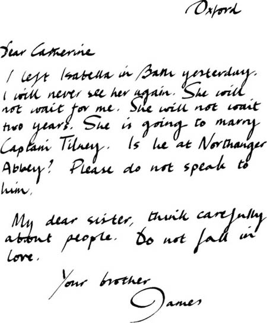

Một chuyến viếng thăm Woodston
Một tuần trôi qua. Vào sáng thứ Năm, Catherine đang trò chuyện cùng Henry và Eleanor. Một bức thư được gửi đến cho cô. Đó là của James. Anh ta đang ở Oxford.

Catherine đọc bức thư. Cô bắt đầu khóc.
‘Cô Morland thân mến ơi!’ Henry nói. ‘Chuyện gì vậy?’
‘Catherine thân mến, tôi có thể giúp gì cho cô không?’ Eleanor hỏi.
‘James rất buồn,’ Catherine trả lời. ‘Isabella Thorpe không định kết hôn với anh ấy. Cô ấy sẽ cưới anh trai của anh, Đại úy Frederick Tilney. Làm ơn đọc bức thư này, cả hai người.’
‘Isabella không phải là người tốt,’ Eleanor nói. ‘Cô ấy không phải là một người bạn tốt.’

Vào thứ Bảy, Henry chuẩn bị quay trở về Woodston.
‘Tất cả chúng tôi sẽ đến thăm anh vào thứ Tư tới, Henry,’ Tướng Tilney nói. ‘Chúng tôi sẽ đến vào lúc mười một giờ.’
Catherine muốn gặp lại Henry. Chủ Nhật, Thứ Hai và Thứ Ba trôi qua chậm chạp. Cuối cùng, Thứ Tư cũng đến. Catherine, Eleanor và Tướng Tilney lên xe ngựa của ngài Tướng. Họ sớm có mặt tại ngôi làng xinh đẹp Woodston.
Cỗ xe ngựa dừng lại bên ngoài một căn nhà hiện đại. Henry đang đợi họ.
‘Ngài có thích ngôi nhà của con trai tôi không, cô Morland?’ Tướng Tilney hỏi. ‘Nó không rộng lắm. Nhưng đủ lớn cho một chàng trai trẻ. Hãy cho Catherine xem hết các phòng nhé, Henry.’
Catherine rất thích ngôi nhà. Một trong những căn phòng ở tầng dưới còn trống.
‘Căn phòng xinh quá!’ Catherine nói. ‘Ngài có thể nhìn thấy khu vườn từ ô cửa sổ lớn này. Thật là một tầm nhìn đẹp. Tại sao ngài không sử dụng căn phòng này, thưa ngài Tilney? Đây là căn phòng đẹp nhất trong nhà mà.’
‘Một ngày nào đó, sẽ có một quý cô trong ngôi nhà này,’ ông nói. Rồi ông lại mỉm cười.
‘Bây giờ thì dẫn chúng ta đi xem khu vườn nào, Henry,’ ông nói.
Catherine rất vui. Tướng Tilney muốn cô kết hôn với Henry. Nhưng Henry nghĩ sao? Catherine không biết.
Mọi người đi dạo trong vườn. Catherine thích mọi thứ – từng bông hoa, từng cái cây. Cô vui vẻ đi bên cạnh Henry.
Sau đó, Catherine và nhà Tilney đi xem những chú ngựa của Henry. Tiếp theo, họ đi dạo quanh làng. Sau đó nữa, họ ăn tối.
Chẳng mấy chốc, đã đến lúc phải đi.
‘Cô có thích chuyến thăm này không, cô Morland?’ Tướng Tilney hỏi. ‘Cô có thích ngôi nhà của con trai tôi không?’
‘Ồ, có chứ,’ Catherine trả lời. ‘Tôi rất thích ngôi nhà này.’
‘Cô có đến thăm chúng tôi lần nữa không?’ Tướng Tilney hỏi. ‘Cô luôn được chào đón nồng nhiệt ở đây – và tại Northanger Abbey.’
Catherine không nói gì. Nhưng cô hiểu.
‘Tướng Tilney thích mình,’ cô tự nhủ. ‘Nhưng liệu Henry có yêu mình không? Anh ấy có muốn kết hôn với mình không?’
Mục lục
- Trang tiêu đề
- Trang bản quyền
- Mục lục
- Ghi chú về tác giả
- Ghi chú về truyện này
- Những người trong truyện
- 1 Catherine đến Bath
- 2 Những người bạn mới của Catherine
- 3 John và James
- 4 Vũ hội tại Phòng trên
- 5 ‘Tại sao anh lại nói dối em?’
- 6 Catherine và nhà Tilney
- 7 Isabella đang yêu
- 8 Đại úy Frederick Tilney
- 9 Isabella và James
- 10 Tu viện Northanger
- 11 ‘Cô Morland thân mến của tôi!’
- 12 Thăm dinh thự Woodston
- 13 Một bức thư từ Isabella
- 14 Catherine về nhà
- 15 ‘Em sẽ lấy anh chứ?’